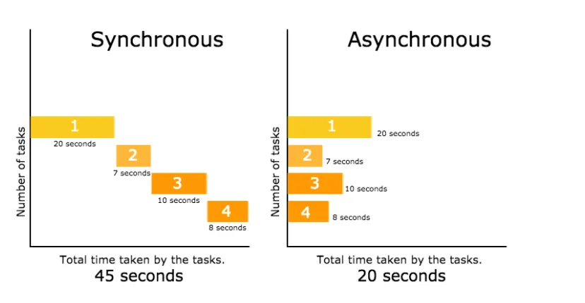

02. Synchronous vs Asynchronous Code
Node.js is famous for being "non-blocking". Understanding this is the key to building fast applications.
🎯 Learning Objectives
- Understanding blocking vs non-blocking code.
- Comparing Synchronous and Asynchronous file reading.

⏱️ Blocking (Synchronous)
In synchronous code, every task must finish before the next one starts.
| index.js | |
|---|---|
🚀 Non-Blocking (Asynchronous)
In asynchronous code, Node.js starts a task and moves to the next one immediately. It handles the result later in a callback.
💡 Real-world Analogy
- Synchronous: A waiter takes one order, goes to the kitchen, waits for the food to be cooked, then brings it to the table before helping the next customer. (Slow!)
- Asynchronous: A waiter takes an order, gives it to the kitchen, and immediately helps the next customer. When the food is ready, they bring it out. (Efficient!)
🛠️ Practice Exercise
Create a file delay.js. Use setTimeout(() => { console.log("I am late"); }, 3000); and place a console.log("I am first"); after it. Run it and observe the order.
📋 Summary Table
| Feature | Synchronous | Asynchronous |
|---|---|---|
| Execution | Line by line | Does not wait |
| Speed | Can be slow (Blocking) | Very fast (Non-blocking) |
| Use case | Simple scripts | Web servers, APIs |
Summary: Node.js defaults to asynchronous execution to keep applications responsive and fast!